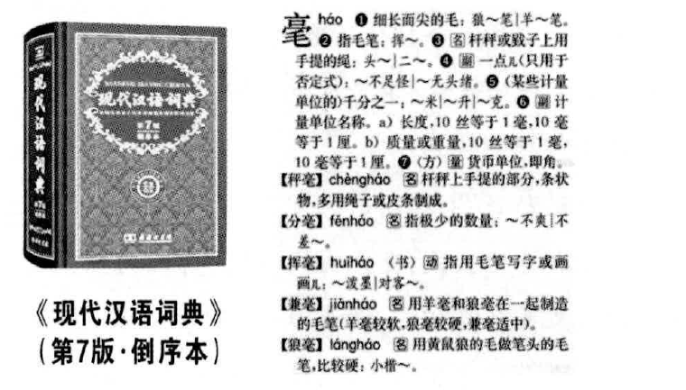

真题 · 语言文字运用
数智时代的辞书
权威辞书通过体例与媒介创新持续服务语言学习和知识获取，数字技术与严谨查证可以相互补充。
导读
文体与题材：知识性议论短文；辞书在数字时代的功能和创新。
作者简介：
文本出处：《现代汉语词典》第7版及其倒序编排体例（题面所据辞书）。
内容脉络：文段先反驳辞书已经过时的看法，说明其释词正音与规范参照功能，再以倒序本、网络版和数字平台等说明更新，最后倡议把查检习惯落实于日常学习。
内容主旨：权威辞书通过体例与媒介创新持续服务语言学习和知识获取，数字技术与严谨查证可以相互补充。
阅读重点：保留待改的错字、病句，区分辞书的编排规则、词义比较与仿写要求。
原文
原文按结构分节；随文内容可定位至对应段落。
更新发展：适应媒介变化与阅读需求
事实上，辞书________。《中国大百科全书》第三版网络版突破纸本局限，建立动态更新、智能检索的全学科知识体系；《辞海》第八版扩容提质，收词量扩充至20万条，整体规模增幅超过 40%；商务印书馆“涵芬”、上海辞书出版社“聚典”等在线知识平台，借助AI 语义分析技术，实现了多端同步、快捷查检；针对少年儿童、中老年群体、特殊人群等不同受众，辞书推出学生版、盲文版以及扫码查字、四角号码检字、播读听书等个性化功能……辞书主动适应现代阅读习惯的创新，从“案头查检工具”转变为“全民阅读伙伴”，使知识更加鲜活可感，助力阅读经典成为时代新风。
语文辞书夯实语言根基，百科辞书搭建知识桥粱，数字融媒辞书赋能终身学习。读书遇疑、落笔行文之时，不防主动翻开字词典，让严谨求知、勤于察证的习惯融入日常。守护好、使用好经典辞书，方能在数智浪潮中稳住心神，为构建知识型社会注入不竭动力。
批注 1
举例与总括
辞书________后列体例、媒介、检索和受众服务的变化，需要用能统摄多方面更新的语句总括。
第1题 · 字形订正
文中最后一段有三个含错别字的词语，请找出并改正。（3分）
参考答案1展开 / 收起
参考作答
“桥粱”改为“桥梁”；“不防”改为“不妨”；“察证”改为“查证”。
审题与考查点
先逐一列出错误词形，再给正确写法，避免只报三个孤立汉字。
文本分析
梁与粱查看证据 ↗
“桥”所接为建筑构件之梁；粱表示谷物，放在知识桥梁的比喻中不合义。
妨与防查看证据 ↗
“不妨”表示可以、无碍，用来提出建议；“防”表示防备，不承担这里的语用功能。
查与察查看证据 ↗
“查证”是调查核实的固定词，强调查核证据；本句与严谨求知相配。
知识点
参见规范字形与词形。同音近形辨析要由词义与搭配决定。
解题方法
从上下文释义反推构词语素，再写“原词→正确词”的完整对应。
易误辨析
不要把声旁相同当作可以通用；规范字形须落实到词语。
答案组织与检核
每项1分，共3分。
第2题 · 成语运用
填入文中第三段括号内的词语，最恰当的一项是（3分）
A．泥沙俱下
B．鱼目混珠
C．滥竽充数
D．不稂不莠
参考答案2展开 / 收起
参考作答
A
审题与考查点
逐项核验对象、范围、关系与语气；判断选项的完整命题是否成立。
文本分析
A项查看证据 ↗
最恰当。泥沙俱下比喻好坏混杂，贴合网络用语数量多且质量不一的语境。
B项查看证据 ↗
不最佳。鱼目混珠强调拿假的冒充真的，需有冒充或欺骗关系，文段只说网络信息复杂，并未限定为伪造。
C项查看证据 ↗
不恰当。滥竽充数强调无真才者混入群体或劣物充数，不契合这里要概括的整体质量混杂。
D项查看证据 ↗
不恰当。不稂不莠并不表示“良莠不齐”，按规范用法不能拿来指好坏混杂。
知识点
参见成语的语境适配。区分混杂、冒充和充数的事件结构。
解题方法
用简短释义替换成语，看哪一个与“泛滥”及权威规范的论证关系一致。
易误辨析
准确复述某个词句，不代表整个选项成立；仍须检查该词句与结论之间的推导关系。
答案组织与检核
本题3分。按题干的正误方向作唯一选择；选项中的局部合理成分不能抵消关键错误。
第3题 · 病句修改
文中画波浪线的部分有两处表述不当，请指出其序号并修改，使语言准确流畅，逻辑严密，可少量增删词语，不得改变原意。（4分）
参考答案3展开 / 收起
参考作答
①改为“《现代汉语词典》旨在推广普通话、促进汉语规范化”；④改为“方便读者分类查阅、系统识记”。
审题与考查点
保留编纂目的及倒序本的便利，只修正混合句式和施受关系。
文本分析
“旨在”与“以……为目的”查看证据 ↗
原句把两种表达目的的句式混合，应选其一；删去“以”“为目的”即可保持旨在句式。
方便的受益者查看证据 ↗
优化体例、归并词条所带来的结果是“方便读者”，读者是便利的接受者；“读者方便……”误置了成分顺序。
知识点
解题方法
先抽目的句式，再顺接“归并排列→方便谁”的语义链，分别修改。
易误辨析
不能把规范查检误认作规范意识而多改第五处；语法分析应以原文为准。
答案组织与检核
每处2分，共4分。
第4题 · 语句补写
请在文中画横线处补写恰当的语句，使整段文字语意完整连贯，内容贴切，逻辑严密，不超过12字。（2分）
参考答案4展开 / 收起
参考作答
一直在与时俱进。
审题与考查点
所填句承接“事实上，辞书”，须统摄后面的多方面更新，12字以内。
文本分析
反驳过时论查看证据 ↗
开头的过时论要求此处回应辞书持续发展，而非只补“很重要”的静态价值判断。
覆盖各类创新查看证据 ↗
网络版、扩容、智能平台、受众功能共同构成与时俱进，不能只概括为电子化。
知识点
参见语句补写、衔接与复位。总括语的范围须覆盖下文各例。
解题方法
提取几个例子的共同谓语含义，合成简短的状态或趋势判断。
易误辨析
“已被网络替代”与段意相反；“都转为电子辞书”又与纸质倒序本的例子冲突。
答案组织与检核
2分，不超过12字。
第5题 · 词语仿写
运用《现代汉语词典》倒序本（如下图），可以对同一韵脚的字进行检索，在同类词语的比较中辨识语义差异，感受词语的音韵美感。例如，以“心”为末字，可发现“恒心、丹心、雄心”等一系列词语，组合成句，便成辞章：遨游书海，求学赖于恒心；奉献国家，始终秉持丹心；擘画未来，永远怀揣雄心。请从下列备选字中任选一个，围绕该字按“末字相同”的规则组词，仿照上文示例，写一组排比句。（4分）备选字：光、力、志。

参考答案5展开 / 收起
参考作答
示例（选“力”）：面对难题，破局需要毅力；身处喧嚣，求真保持定力；参与协作，众人汇成合力。
审题与考查点
末字须同为所选的一个字，以三个不同词义支撑一组结构相近、意义连贯的排比句。
文本分析
编排规则迁移查看证据 ↗
题干以恒心、丹心、雄心示范同一末字的词族，本题选“力”同样应使用不同词语，不能只把同一个“努力”重复三次。
词义决定搭配查看证据 ↗
毅力适合持久克难，定力适合抵御干扰，合力适合协作汇聚；每个词必须在自己的语境中可解释。
平行句式形成排比查看证据 ↗
三个分句采用“情境短语＋行为判断＋同尾词”组织，内容依次涉及个人克难、独立判断与集体行动，结构相应而不语义空转。
知识点
解题方法
先选字组出三个不同词，再为各词配置恰当动作或场景，最后调整为平行句式。
易误辨析
同韵不等于同末字；“光—亮—芒”虽有关联，仍不满足此题固定末字的要求。
答案组织与检核
共4分；原题要求一组排比，原参考容许合乎语境的其他表达。
参考文献
- 武汉市2027届高中毕业生九月调研考试，武汉市教育科学研究院命制，2026年9月16日，语文试题及参考答案。
- 《现代汉语词典》第7版及其倒序编排体例（题面所据辞书）。
本文关联
引用本文
排比4 处
阅读条目 →数智时代的辞书 · 第5题选析 ↗研习任务：运用《现代汉语词典》倒序本（如下图），可以对同一韵脚的字进行检索，在同类词语的比较中辨识语义差异，感受词语的音韵美感。例如，以“心”为末字，可发现“恒心、丹心、雄心”等一系列词语，组合成句，便成辞章：遨游书海，求学赖于恒心；奉献国家，始终秉持丹心；擘画未来，永远怀揣雄心。请从下列…
数智时代的辞书 · 第5题选析 ↗文本依据：“在同类词语的比较中辨识语义差异”。
数智时代的辞书 · 第5题选析 ↗文本依据：“写一组排比句”。
数智时代的辞书 · 第5题选析 ↗查看完整解析与全部证据